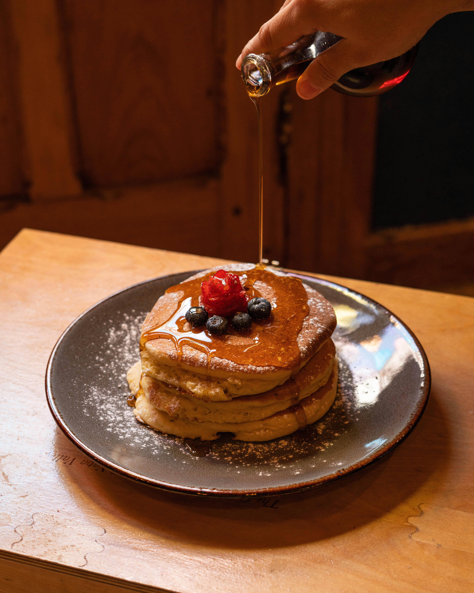

Fluffy Weekend Pancakes

Ingredients
- 1.5 cups All-purpose flour
- 3.5 tsp Baking powder
- 1 tbsp White sugar
- 1/4 tsp Salt
- 1.25 cups Milk
- 1 large Egg
- 3 tbsp Butter, melted
- Butter or oil for the pan
Instructions
- In a large bowl, whisk together the flour, baking powder, sugar, and salt until well combined.
- Make a small well (a hole) in the center of your dry ingredients. Pour in the milk, egg, and melted butter.
- Mix everything together gently. It is completely okay if the batter has a few lumps—overmixing will make the pancakes tough!
- Heat a lightly oiled frying pan or griddle over medium-high heat.
- Pour about 1/4 cup of batter onto the hot pan for each pancake.
- Cook until you see bubbles forming on the top and the edges look dry (about 2-3 minutes). Flip carefully and cook the other side until golden brown.
- Serve immediately with your favorite toppings, like maple syrup, fresh berries, or chocolate chips.